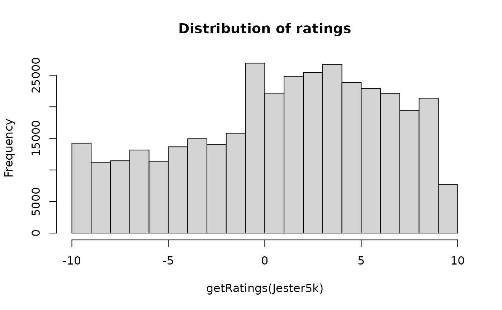

Jester dataset (5k sample)
Jester5k.RdThe data set contains a sample of 5000 users from the anonymous ratings data from the Jester Online Joke Recommender System collected between April 1999 and May 2003.
Usage
data(Jester5k)Format
The format of Jester5k is: Formal class 'realRatingMatrix' [package "recommenderlab"]
The format of JesterJokes is: vector of character strings.
Details
Jester5k contains a 5000 x 100 rating matrix (5000 users and 100 jokes)
with ratings between -10.00 and +10.00. All selected users have
rated 36 or more jokes.
The data also contains the actual jokes in JesterJokes.
References
Ken Goldberg, Theresa Roeder, Dhruv Gupta, and Chris Perkins. "Eigentaste: A Constant Time Collaborative Filtering Algorithm." Information Retrieval, 4(2), 133-151. July 2001.
Examples
data(Jester5k)
Jester5k
#> 5000 x 100 rating matrix of class ‘realRatingMatrix’ with 363209 ratings.
## number of ratings
nratings(Jester5k)
#> [1] 363209
## number of ratings per user
summary(rowCounts(Jester5k))
#> Min. 1st Qu. Median Mean 3rd Qu. Max.
#> 36.00 53.00 72.00 72.64 100.00 100.00
## rating distribution
hist(getRatings(Jester5k), main="Distribution of ratings")

## 'best' joke with highest average rating
best <- which.max(colMeans(Jester5k))
cat(JesterJokes[best])
#> A guy goes into confession and says to the priest, "Father, I'm 80 years old, widower, with 11 grandchildren. Last night I met two beautiful flight attendants. They took me home and I made love to both of them. Twice." The priest said: "Well, my son, when was the last time you were in confession?" "Never Father, I'm Jewish." "So then, why are you telling me?" "I'm telling everybody."